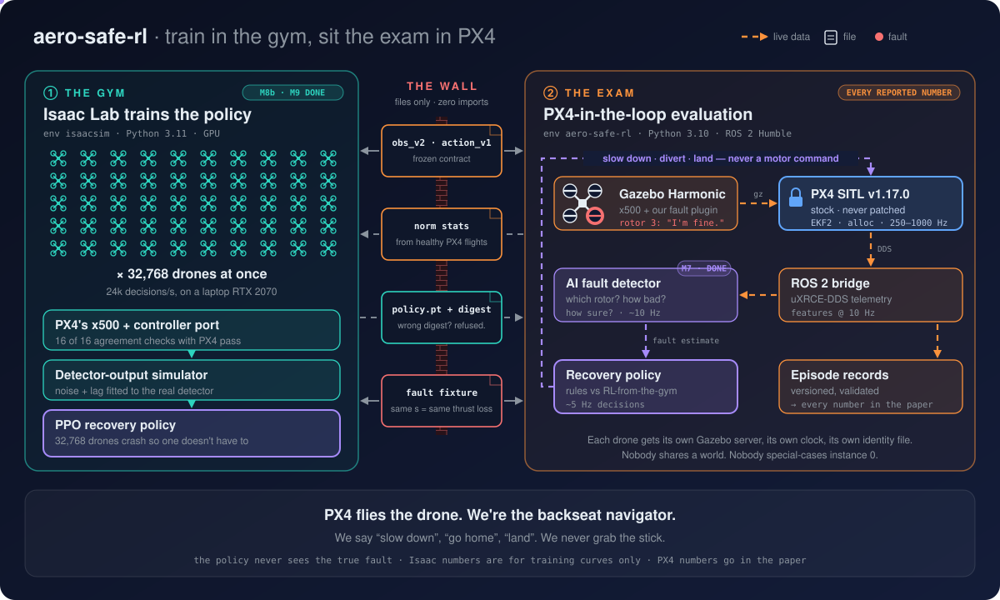

A motor weakens. PX4 doesn't notice. A learned policy flies it home.
A quadcopter loses thrust on one rotor in the middle of a mission. This project trained a recovery policy on simulated drones at once in NVIDIA Isaac Sim, then tested it where it counts: inside the real PX4 autopilot, on evaluated flights in Gazebo.
A weak rotor is a quiet failure
Propellers chip, motors wear, connectors loosen. The rotor keeps spinning, only weaker. PX4, the open-source autopilot flown here, keeps the drone level by driving that rotor harder, and its own failure detector stays silent: it raised nothing on any of the 178 weak-fault flights in this project's fault dataset (details).
Each bar is the most thrust a rotor can still give. Hovering level takes about 59% from each, so once the weak rotor drops below the line (about 41% lost) no controller can hold the drone level (derivation).
How those flights ended, in PX4
PX4 flies the drone. The policy is the navigator.
Nothing inside PX4 is changed. A fault detector reads its telemetry, and a recovery policy turns that into three high-level commands. It never touches a motor.
Rotor-fault plugin
Weakens one rotor, suddenly or over a few seconds, at a random moment of the mission.
PX4 autopilot
Stock and unmodified. Mixes the motors and keeps the drone level, as on a real flight controller.
Telemetry over ROS 2
Attitude, body rates, motor outputs and position, exactly as PX4 publishes them.
Fault detector
Five small neural networks reading the last few seconds: is there a fault, which rotor, how weak.
Recovery policy
Trained with reinforcement learning. Sees the telemetry and the detector's estimate, never the true fault.
Train in the gym, sit the exam in PX4
Reinforcement learning needs millions of flights, and PX4 in Gazebo flies one drone in real time. So the policy trains in Isaac Sim, where drones fly at once on one graphics card against a PyTorch copy of PX4's controller that passes all 16 agreement checks with the real one (details). The two sides share only files. Every reported number comes from PX4.

What flights say
Every condition flew the same schedule of faults (the same rotor, severity and moment, drawn once from seed ), so any two conditions can be compared fault by fault. Rates carry 95% intervals. Ten comparisons were written down before the first flight.
How flights ended, by how weak the rotor was
The learned policy finishes almost every mild-fault mission, and some right below the physics limit where the others finish almost none. Past the limit, everything comes down.
Finished the mission
Crashed
Dots are rates, bars their 95% intervals; hover for flight counts. Source: results/m10/results.json, main.
Ten comparisons fixed before flying: hold
A difference holds when its whole 95% interval sits on one side of zero. All three that hold are about finishing the mission; none of the crash comparisons does.
Difference in percentage points, first condition minus second. Source: comparisons.
Does the fault detector matter?
Barely. A perfect detector, a late one and none at all give the same rates. On the identical fault, the policy's flight ends the same way with a perfect detector of the time, and with no detector .
Finished, rotor 40% weaker
Crashed, rotor 45% weaker
Source: delay_curve, detector_use.
Did Isaac Sim predict PX4?
Mostly. Isaac's rate falls inside PX4's interval in of cells for finishing and of for crashing. Where it misses, PX4 was kinder.
Finished
Crashed
One dot per policy and severity; hollow = outside the PX4 interval. Source: transfer.
How hard it came down
Every recovery method lands more softly than PX4 alone at 40%. From 45% up, every method's median is past the crash line.
Median touchdown speed of flights that came down. Source: descriptive.
Training in Isaac Sim
Three training seeds, each updates on drones. Their curves end within a few points of each other, yet on PX4 at 40% they finish , and . A training curve alone does not say which policy will do best.
Isaac Lab training curve, not a result Source: results/m9_train/*/metrics.csv.
More than flying slower?
Holding the policy's own average commands for the whole flight finishes at 40%, against for the policy. Its gain comes from reacting in flight.
Longer training
One policy trained for 600 updates crashes at 35–50%, against with no recovery: . The only one that cuts crashes.
No panic on healthy flights
The learned policy commanded a landing on of healthy flights. A recovery method that lands good drones is worse than none.
Five flights worth watching
Picked by rules written down before any replay was viewed, so they show what the data holds rather than what looks best. Each says how many flights qualified.
What it does not do
A method that wins everywhere mostly means it was not tested hard enough. These are the results that did not go the policy's way.
It does not reduce crashes
With the rotor 40–50% weaker the learned policy crashes , no recovery , rule-based . Neither difference holds.
At mild faults it only matches doing nothing
PX4 alone finishes of those missions; the policy . Its big win is over the rule-based controller, not over PX4.
The detector makes no measurable difference
With perfect fault information the policy finishes at 40%; with the real detector . It raises the alarm on almost every fault, and the policy barely reacts to it.
Past the limit, everyone comes down hard
At 45%, the median touchdown is , above the m/s crash line for every method. Physics wins there.
Isaac is not always right
finishing cells fall outside PX4's interval, nearly all at 40%, where PX4 finished more missions than Isaac predicted.
Four flights never got their fault
Found while building this site: in 4 flights the fault never began. Re-flown with the fault applied, three ended the same way and one crashed; no verdict changes (details).
Where it stops working
more flights in settings the policy never trained on. It is never worse than no recovery on mild faults or crashes. Its edge right below the limit survives some shifts and vanishes in others.
Finishing right below the limit: learned against no recovery
Each setting's pre-registered check that the learned policy finishes more missions than no recovery right below the limit (settings that tested only "not worse" are left out). Source: results/m11/results.json, settings.
The detector does not generalize either: in 2 newtons of wind it raised an alarm on of healthy flights, against of without wind. The policy still landed none of them.
Built to be trusted
One simulator per drone
Every worker gets its own Gazebo server, clock and identity file. Nobody shares a world, so one crash never poisons another flight.
planned flights
Flown on a laptop and spot cloud machines, two simulators each. were lost to worker restarts and are reported, not hidden.
Frozen before flying
Each sweep file was fingerprinted before its first flight; changing it means a new version, never an edit. Trials ran on their own seeds first.